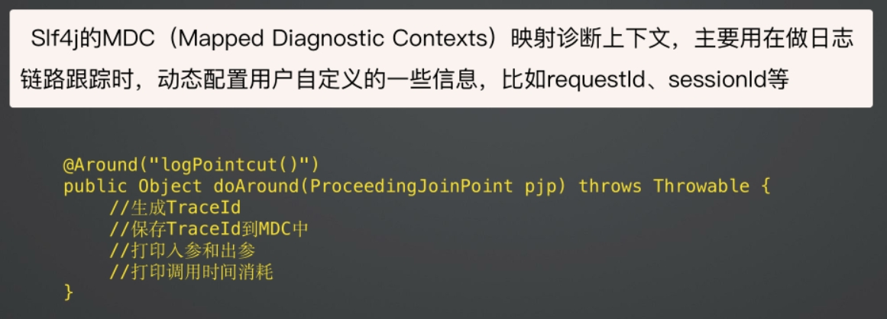

@Data @EqualsAndHashCode(callSuper = false) @Accessors(chain = true) @NoArgsConstructor @AllArgsConstructor public class MyTest { String name; String addr; }
AOP+日志框架
slf4j MDC 
Controller技术组件
1 2 3 4 5 6 7 8 9
@RestController @RequestMapping("/customerStaffs") public class CustomerStaffController { @PostMapping("/") public Result<Long> addCustomerStaff(@RequestBody AddCustomerStaffReqVO addCustomerStaffReqVO) {...}
@GetMapping("/{staffId}") public Result<CustomerStaffRespVO> findCustomerStaffById(@PathVariable("staffId") Long staffId) {...} }